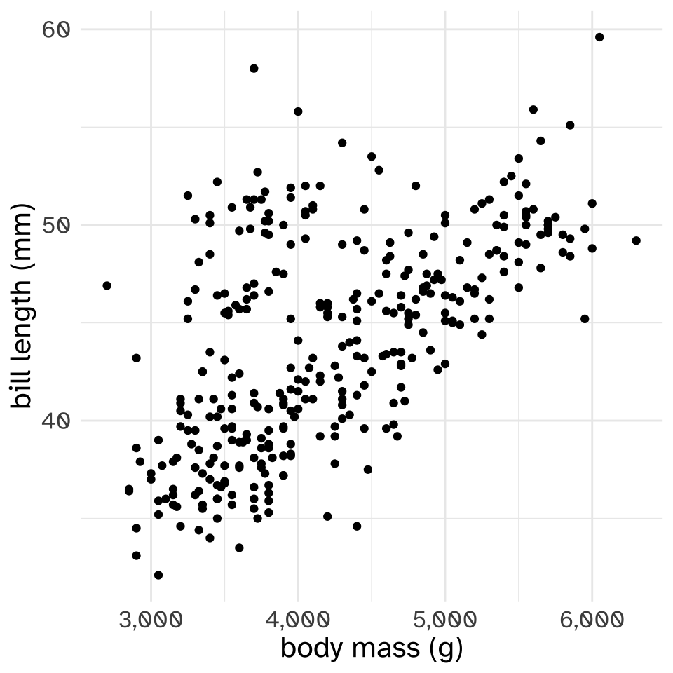
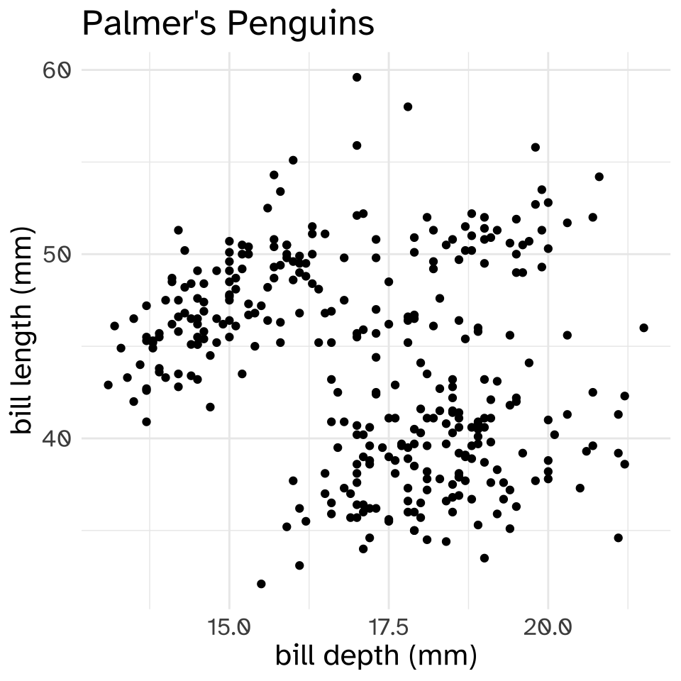
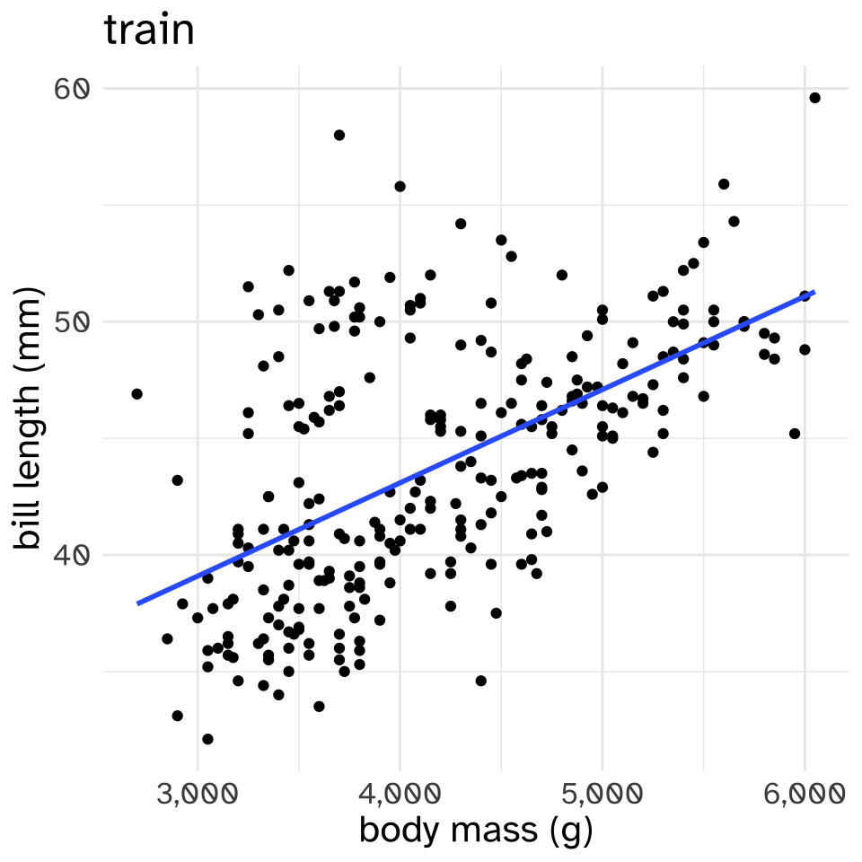
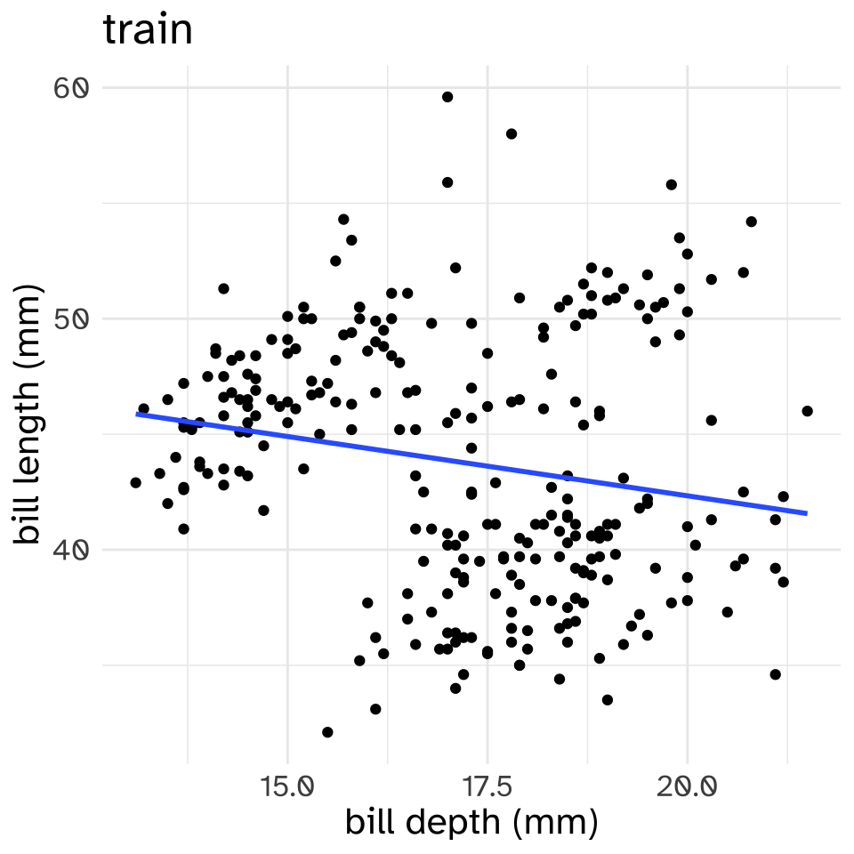
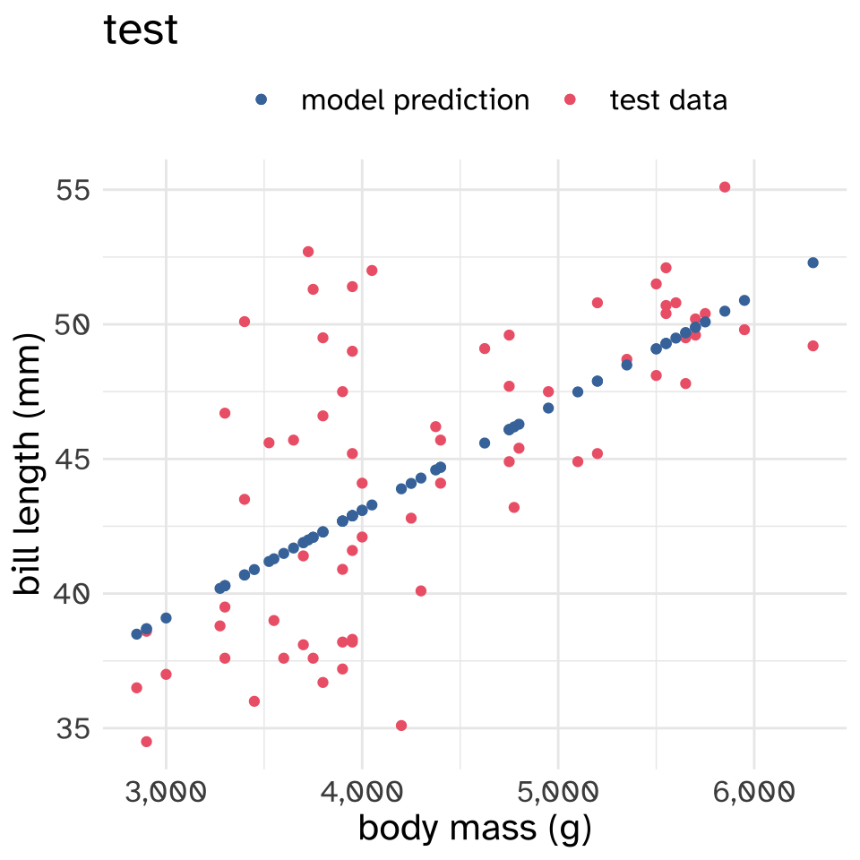
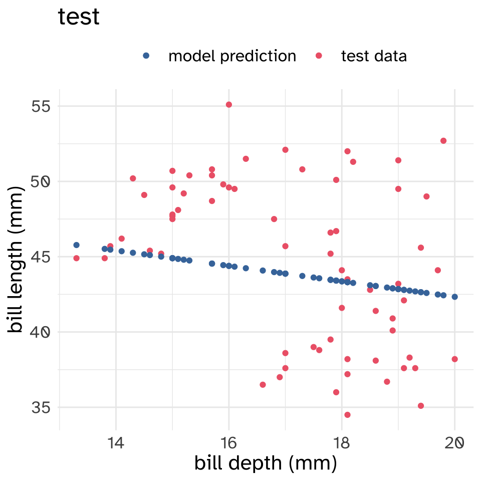

Evaluating models
Language Models (including ngram models) are focused on “string prediction”, meaning we need to evaluate them like we would any predictive model. In both statistics and machine learning, there are some conventionalized approaches to this task that we can discuss in general.
Unless indicated otherwise, the code shown in this lesson is R code. I’m using R code instead of Python, even though Python is the language we’re learning in the course, because I’m more familiar with how to so what I want to show you in R.
Training vs testing
The best way to evaluate a prediction model is to see how good its predictions are on some data that you already know what the predictions should be. The workflow, then, is
- “Train” the model on a training data set.
- “Test” the model on a test data set.
Now, it’s rarely the case that people collect and curate a large training dataset to train a model, then go out and collect and curate a whole nother test dataset to test the model’s predictions. Instead, what they do is take their original dataset and split it into two pieces: “train” and “test”. Usually, “train” contains most of the data (80% to 90%), while “test” is a smaller held-out dataset (10% to 20% of the data).
Why not train and test on the whole dataset?
When the model is “learning” how to make its predictions, the values it learns to make those predictions with will always be dependent on the training data. For example, compare the mini-bigram models below, one based on Frankenstein and the other based on Count of Monte Cristo.
| title | word | next word | n |
|---|---|---|---|
| Frankenstein; Or, The Modern Prometheus | the | same | 62 |
| Frankenstein; Or, The Modern Prometheus | the | most | 56 |
| Frankenstein; Or, The Modern Prometheus | the | cottage | 41 |
| Frankenstein; Or, The Modern Prometheus | the | sun | 39 |
| Frankenstein; Or, The Modern Prometheus | the | first | 35 |
| title | word | next word | n |
|---|---|---|---|
| The Count of Monte Cristo, Illustrated | the | count | 1107 |
| The Count of Monte Cristo, Illustrated | the | young | 530 |
| The Count of Monte Cristo, Illustrated | the | same | 442 |
| The Count of Monte Cristo, Illustrated | the | door | 410 |
| The Count of Monte Cristo, Illustrated | the | first | 295 |
If we used the bigram model trained on Frankenstein to predict the most likely word to come after “the” on Frankenstein itself, we would do pretty well! But if we tried to use it to predict the most likely word to come after “the” in The Count of Monte Cristo, we’d do a lot worse! The highest frequency the w bigram in The Count of Monte Cristo (the count) doesn’t even appear in Frankenstein.
Bias vs Variance
This issue of the predictions of a model being too particularized to training data is related to the concept of the “Bias-Variance Tradeoff”.
High Bias, Low Variance: One way to think of a high-Bias model is that it “over simplifies” the relationships in the data, but it also means that it will generalize to new data sets in a way that’s comparable to the training set.
- high-Bias model of morphology: All past tense is formed by adding -ed. This will produce some errors for verbs like run, and go, but will generalize well to new verbs, like yeet.
Low Bias, High Variance: A high-Variance model captures much more detail to the relationships in the data, but that means it might be “overfit” on the training data.
- high-Variance model of morphology: You just have to memorize every present ➡️ past mapping verb by verb. This won’t any errors on verbs we already know like wait, run or go, but won’t generalize well to new verbs, like yeet.
Measuring error (or Loss)
Inevitably, the model we’re fitting will make predictions that are wrong, and then we need some way to quantify, or measure, how wrong the predictions were. The specific measure we use is going to depend a lot on the kind of prediction task we have, but some you might have already seen (or will see) are
Mean Squared Error, or MSE
Cross Entropy
F(1) score
Accuracy
BLEU score
Often the numbers these scores put out aren’t meaningful in and of themselves, but rather are used to compare models. But when you see a “score” or a “loss function” mentioned, understand it, generally, to be a measure of the difference between the values we expected in the test set, vs the values the model predicted.
A Linear Model example
As a brief example, let’s look at a data set of body measurements of penguins.

head(palmerpenguins::penguins)# A tibble: 6 × 8
species island bill_length_mm bill_depth_mm flipper_l…¹ body_…² sex year
<fct> <fct> <dbl> <dbl> <int> <int> <fct> <int>
1 Adelie Torgersen 39.1 18.7 181 3750 male 2007
2 Adelie Torgersen 39.5 17.4 186 3800 fema… 2007
3 Adelie Torgersen 40.3 18 195 3250 fema… 2007
4 Adelie Torgersen NA NA NA NA <NA> 2007
5 Adelie Torgersen 36.7 19.3 193 3450 fema… 2007
6 Adelie Torgersen 39.3 20.6 190 3650 male 2007
# … with abbreviated variable names ¹flipper_length_mm, ²body_mass_gnrow(palmerpenguins::penguins)[1] 344We’re going to look at two models that try to predict the bill length of these penguins, one trying to predict it based on body mass, and the other based on bill depth.


First, well split the data into train and test sets. I’m going to choose a random 80% of the data to be the training set, and use remaining 20% to be the test set.
set.seed(517)
penguins_id <- penguins %>%
drop_na() %>%
mutate(row_id = 1:n())
train <- penguins_id %>%
slice_sample(prop = 0.8)
test <- penguins_id %>%
filter(!row_id %in% train$row_id)
nrow(train)[1] 266nrow(test)[1] 67Now, I’ll fit two linear models with the training set. The linear model is saying “the predicted bill length for a given predictor (body mass or bill depth) is whatever value is on the line.”
train.

These are both “High Bias” models. Hardly any of the points are exactly on the lines.
Now, let’s see how well these models perform on the held out test data.\


It’s kind of hard to see from just the figures which model performed better on the test set. To evaluate the error, or loss, of these models on the test set, I’ll use the Mean Squared error, which is calculated like so:
For every data point, subtract the predicted value from the actual value, to get the difference between the prediction and reality.
Multiply each difference by itself, a.k.a. square it.1
Get the mean of these squared errors.
In math terms, let’s say
\(y_i\) is the actual value of some data point.
\(\hat{y}_i\) is the predicted value
\(N\) is the total number of data points.
Then the mean squared error is
\[ \text{MSE} = \frac{\sum_{i=1}^N(y_i-\hat{y}_i)^2}{N} \]
I’ll show you the actual code I’m using to get the MSE, in case it demystifies the mathematical formula.
diff_body = test$bill_length_mm - test$body_pred
square_diff_body = diff_body^2
mse_body = mean(square_diff_body)
print(mse_body)[1] 16.72451diff_bill = test$bill_length_mm - test$bill_pred
square_diff_bill = diff_bill^2
mse_bill = mean(square_diff_bill)
print(mse_bill)[1] 26.83769It looks like the model predicting bill length using body mass has a smaller MSE than the model predicting bill length using bill depth. So if we had to choose between these two models, we’d go with the body mass model.
Precision, Recall, and F-Measure
For NLP tasks, we’re not usually trying to predict a continuous measure, but rather trying to categorize words, sentences, or documents. In these kinds of tasks, when we evalulate a model, we’ll often want to use measures known as “Precision”, “Recall” and “F-measure”.
To illustrate these measures, let’s say we’ve built a robot to pick raspberries, and we want it to pick all of the ripe berries (if we leave any behind, they’ll rot!) and none of the unripe berries (if we pick them before they’re ripe, we’ve missed out on future berries!). Let’s present the robot with this following scene that has 9 berries in the foreground. 5 of them are ripe and 4 of them are unripe.
Scenario 1: It picks all of the berries
Let’s say the robot picked all of the berries.
| Picked | Unpicked |
|---|---|
| ripe berry | |
| ripe berry | |
| ripe berry | |
| ripe berry | |
| ripe berry | |
| unripe berry | |
| unripe berry | |
| unripe berry | |
| unripe berry |
This strategy has high “Recall”. There were a total of 5 ripe berries, and the robot picked all 5 of them.
\[ \text{recall} = \frac{\text{ripe picked berries}}{\text{ripe berries}} = \frac{5}{5} = 1 \] But, it has low “precision”. Of all the berries it picked, a lot of them were unripe.
\[ \text{precision} = \frac{\text{ripe picked berries}}{\text{picked berries}} = \frac{5}{9} = 0.55 \]
The “F-measure” or “F1 score” is a way to combine the precision and recall score into one overall performance score.
\[ F_1 = 2\frac{\text{precision}\times \text{recall}}{\text{precision} + \text{recall}}=2\frac{0.55\times 1}{0.55 + 1}=2\frac{0.55}{1.55} = 0.71 \]
Scenario 2: The robot picks only 1 ripe raspberry
| Picked | Unpicked |
|---|---|
| ripe berry | |
| ripe berry | |
| ripe berry | |
| ripe berry | |
| ripe berry | |
| unripe berry | |
| unripe berry | |
| unripe berry | |
| unripe berry |
This strategy has a very low recall. There are 5 ripe berries, and it has only picked 1 of them
\[ \text{recall} = \frac{\text{ripe picked berries}}{\text{ripe berries}} = \frac{1}{5} = 0.2 \] But, it has an extremely high precision. Of all of the berries it picked, it only picked ripe ones!
\[ \text{precision} = \frac{\text{ripe picked berries}}{\text{picked berries}} = \frac{1}{1} = 1 \] The very low precision winds up dragging down the overall F-measure. \[ F_1 = 2\frac{\text{precision}\times \text{recall}}{\text{precision} + \text{recall}}=2\frac{1 \times 0.2}{1 + 0.2}=2\frac{0.2}{1.2} = 0.33 \]
Scenario 3: The robot alternates between picking and not picking
| Picked | Unpicked |
|---|---|
| ripe berry | |
| ripe berry | |
| ripe berry | |
| ripe berry | |
| ripe berry | |
| unripe berry | |
| unripe berry | |
| unripe berry | |
| unripe berry |
\[ \text{recall} = \frac{\text{ripe picked berries}}{\text{ripe berries}} = \frac{3}{5} = 0.6 \]
\[ \text{precision} = \frac{\text{ripe picked berries}}{\text{picked berries}} = \frac{3}{5} = 0.6 \]
\[ F_1 = 2\frac{\text{precision}\times \text{recall}}{\text{precision} + \text{recall}}=2\frac{0.6 \times 0.6}{0.6 + 0.6}=2\frac{0.36}{1.2} = 0.6 \]
A non-berry example
One kind of NLP task is “Named Entity Recognition” (NER), or detecting and identifying the kind of named entities in a text. Here’s an example of spaCy doing that with a the sentence
Dr. Josef Fruehwald is teaching Lin517 at the University of Kentucky in the Fall 2022 semester.
# python
import spacy
from spacy import displacy
nlp = spacy.load("en_core_web_sm")
text = "Dr. Josef Fruehwald is teaching Lin517 at the University of Kentucky in the Fall 2022 semester."
doc = nlp(text)
print(displacy.render(doc, style = 'ent'))When looking at the original sentence, we could think of each word, or span of words, as a berry, and the named entities as the ripe berries. The precision and recall here would be
\[ \text{precision}=\frac{\text{named entitites identified}}{\text{identified words}} \]
\[ \text{recall}=\frac{\text{named entities identified}}{\text{named entities}} \]
In this example, additional adjustments might need to be made for whether the span of the named entities is correct. 2022 is correctly a date, but maybe Fall should be included in its span. Also, it has identified Lin517 as a GeoPolitical Entity (GPE).
Edit Distance
Footnotes
The point of doing this is to get a measure that is always positive. If for one data point actual-predicted = 2, then squaring it gets \(2^2=4\). If another data point had an error of the same size, but in the opposite direction, then actual-predicted=-2, and squaring it gets us \(-2^2=4\).↩︎